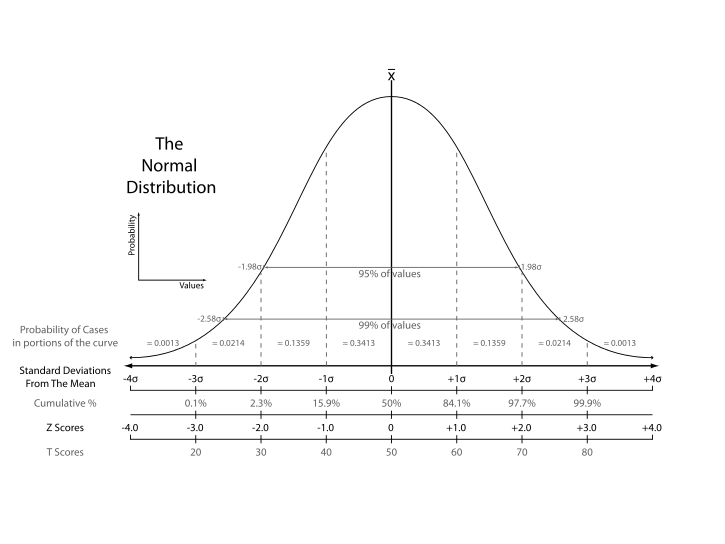
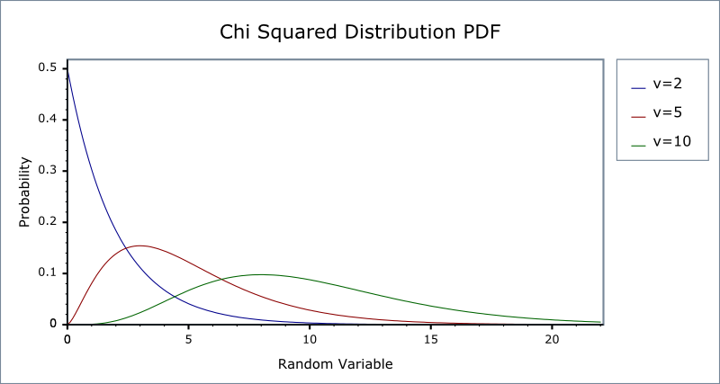
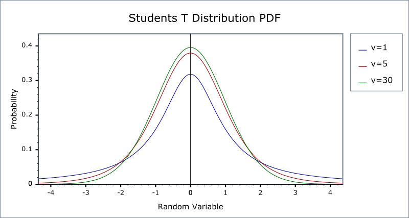
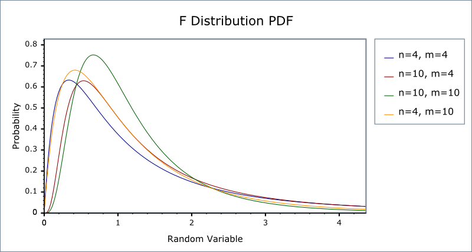
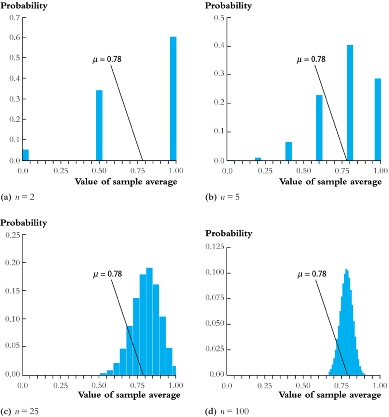

Lecture 2: Review of Probability
Table of Contents
This lecture will review the basics in probability theory. The review is by no means comprehensive. We will just refresh our mind with the concepts that will be used the lectures that follow.
1 Random Variables and Probability Distributions
1.1 Defining probabilities and random variables
Experiments, outcomes, sample space, and events
Probabilities are defined with respect to things whose occurrence are random. We use the idea of an experiment to symbolize the processes that generate random results. The outcomes of an experiment are its mutually exclusive potential results. For example, a simple experiment might be tossing a coin, the outcome of which is either getting a head(H) or a tail(T) but not both.
We can denote all the outcomes from an experiment with a set \(S\), that is called the sample space. In the tossing-coin experiment, the sample space is \(\{H, T\}\). Or if we toss a dice, the sample space is \(\{1, 2, 3, 4, 5, 6\}\). An event is a subset of the sample space. Getting a head is an event, which is \(\{H\} \subset \{H, T\}\).
Probability
The probability of an event is the proportion of the time that the event will occur in the long run. For example, we toss a coin for \(n\) times and get \(m\) heads. When \(n\) is very large, we can say that the probability of getting a head in a toss is \(m/n\). Obviously, we cannot always repeat an experiment with infinite times. So we need a general (axiomatic) definition of probability as follows.
An axiomatic definition of probability
A probability of an event \(A\) in the sample space \(S\), denoted as \(\mathrm{Pr}(A)\), is a function that assign \(A\) a real number in \([0, 1]\), satisfying the following three conditions:
- \(0 \leq \mathrm{Pr}(A) \leq 1\).
- \(\mathrm{Pr}(S) = 1\).
- For any disjoint sets, \(A\) and \(B\), that is \(A\) and \(B\) have no element in common, \(\mathrm{Pr}(A \cup B) = \mathrm{Pr}(A) + \mathrm{Pr}(B)\).
Here we use the concept of disjoint (or mutually exclusive) sets. \(A\) and \(B\) are disjoint if there is no common element between these two sets, that is, \(A \cap B\) is an empty set.
Random variables
Instead of using words or a set symbol to represent an event or an outcome, we can use numeric value to do so. A random variable is thus a numerical summary associated with the outcomes of an experiment. You can also think of a random variable as a function mapping from an event \(\omega\) in the sample space \(\Omega\) to the real line, as illustrated in Figure 1.

Figure 1: An illustration of random variable
Random variables can take different types of values. A discrete random variables takes on a discrete set of values, like \(0, 1, 2, \ldots, n\) whereas a continuous random variable takes on a continuum of possble values, like any value in the interval \((a, b)\).
1.2 Probability distributions
The probability distribution for a discrete random variable
The probability distribution of a discrete random variable is the list of all possible values of the variable and the probability that each value will occur. These probabilities sum to 1.
- The probability mass function
Let \(X\) be a discrete random variable. The probability distribution of \(X\) (or the probability mass function), \(p(x)\), is
\begin{equation*} p(x) = \mathrm{Pr}(X = x) \end{equation*}where we use \(X\) to denote the random variable and \(x\) to denote a specific value that \(X\) can take. We denote the set of all possible value of \(X\) as \(S\).
The axioms of probability require that (1) \(0 \leq p(x) \leq 1\) and (2) \( \sum_{i=1}^n p(x_i) = 1\).
Table 1: An illustration of the probability distribution of a discrete random variable \(X\) 1 2 3 Sum \(\mathrm{P}(x)\) 0.25 0.50 0.25 1. - The cumulative probability distribution
The cumulative probability distribution (or the cumulative distribution function, c.d.f.) is the probability that the random variable is less than or equal to a particular value. Let \(F(x)\) be the c.d.f of \(X\). Then \(F(x) = \mathrm{Pr}(X \leq x)\).
Table 2 and Figure 2 show that the c.d.f. of a discrete random variable is a step function of \(x\).
Table 2: An illustration of the c.d.f. of a discrete random variable \(X\) 1 2 3 Sum \(\mathrm{P}(x)\) 0.25 0.50 0.25 1 C.d.f. 0.25 0.75 1 -- 
Figure 2: The c.d.f. of a discrete random variable
- Bernouli distribution
Many experiments like tossing a coin generate two outcomes: 1 with the probability of \(p\) and 0 with the probability of \(1-p\). The random variable generated from such an experiment follows the Bernoulli distribution.
The Bernoulli distribution
\begin{equation*} G = \begin{cases} 1 & \text{with probability } p \\ 0 & \text{with probability } 1-p \end{cases} \end{equation*}
The probability distribution of a continuous random variable
Unlike a discrete random variable that we can enumerate its values for each corresponding event, a specific value of a continuous random variable is just a point in the real line, the probability of which is zero. Instead, we use the concept of the probability density function (p.d.f) as the counterpart of the probability mass function. And the definition of the p.d.f. of a continuous random variable depends on the definition of its. c.d.f.
The cumulative distribution function of a continous random variable is defined as it is for a discrete random variable. That is, for a continous random variable, \(X\), the c.d.f. is \(F(x) = \mathrm{Pr}(X \leq x)\). And the p.d.f. of \(X\) is the function that satisfies \[ F(x) = \int_{-\infty}^{x} f(t) \mathrm{d}t \text{ for all } x \]

Figure 3: The p.d.f. and c.d.f. of a continuous random variable (the normal distribution)
For both discrete and continuous random variable, \(F(x)\) must satisfy the following properties:
- \(F(+\infty) = 1 \text{ and } F(-\infty) = 0\) (\(F(x)\) is bounded between 0 and 1)
- \(x > y \Rightarrow F(x) \geq F(y)\) (\(F(x)\) is nondecreasing)
By the definition of the c.d.f., we can conveniently calculate probabilities, such as,
- \(\mathrm{P}(x > a) = 1 - \mathrm{P}(x \leq a) = 1 - F(a)\)
- \(\mathrm{P}(a < x \leq b) = F(b) - F(a)\).
A note on notation. The c.d.f. and p.d.f. of a random variable \(X\) are sometimes denoted as \(F_X(x)\) and \(f_X(x)\). In our lecture notes, if there is no confusion, I will simply use \(F(x)\) and \(f(x)\) without the subscript.
2 Expectation, Variance, and Other Moments
2.1 The expected value of a random variable
Definition
The expected value of a random variable, X, denoted as \(\mathrm{E}(X)\), is the long-run average of the random variable over many repeated trials or occurrences, which is also called the expectation or the mean. The expected value measures the centrality of a random variable.
For a discrete random variable \[ \mathrm{E}(X) = \sum_{i=1}^n x_i \mathrm{Pr}(X = x_i) \]
e.g. The expectation of a Bernoulli random variable, G \[ \mathrm{E}(G) = 1 \cdot p + 0 \cdot (1-p) = p \]
- For a continuous random variable \[ \mathrm{E}(X) = \int_{-\infty}^{\infty} x f(x) \mathrm{d}x\]
2.2 The variance and standard deviation
The variance of a random variable \(X\) measures its average deviation from its own expected value. Let \(\mathrm{E}(X) = \mu_X\) and denote the variance of \(X\), denoted as \(\mathrm{Var}(X)\) or \(\sigma^2_X\), is then
\begin{equation*} \mathrm{Var}(X) = \mathrm{E}(X-\mu_X)^{2}= \begin{cases} \sum_{i=1}^n (x_i - \mu_X)^{2}\mathrm{Pr}(X = x_i) & \text{if } X \text{ is discrete} \\ \int_{-\infty}^{\infty} (x - \mu_X)^{2}f(x)\mathrm{d} x & \text{if } X \text{ is continuous} \end{cases} \end{equation*}The standard deviation of \(X\) is the square root of \(\mathrm{Var}(X)\) and is denoted as \(\sigma_{X}\). That is, \(\sigma_{X} = \sqrt{\mathrm{Var}(X)}\)
A convenient formula for calculating the variance is \[ \mathrm{Var}(X) = \mathrm{E}(X - \mu_X)^{2} = \mathrm{E}(X^{2}) - \mu_X^{2} \]
The variance of a Bernoulli random variable, \(G\) \[ \mathrm{Var}(G) = (1-p)^{2}p + (0-p)^{2}(1-p) = p(1-p) \] and \(\sigma_{G} = \sqrt{p(1-p)}\).
From the definition of the expectation and variance, we can compute the expectation and variance of a linear function of \(X\). Let \(Y = a + bX\), then
- \(\mathrm{E}(Y) = a + b\mathrm{E}(X)\)
- \(\mathrm{Var}(Y) = \mathrm{Var}(a + b X) = b^{2} \mathrm{Var}(X)\).
2.3 Moments of a random variable, skewness and kurtosis
The expectation and variance are two special cases of the moments of a distribution.
Definition of the moments of a distribution
- kth moment
- The kth moment of the distribution of \(X\) is \(\mathrm{E}(X^{k})\). So, the expectation is the "first" moment of \(X\).
- kth central moment
- The kth central moment of the distribution of \(X\) with its mean \(\mu_X\) is \(\mathrm{E}(X - \mu_X)^{k}\). So, the variance is the second central moment of \(X\).
It is important to remember that not all the moments of a distribution exist. This is especially true for continuous random variables, for which the integral to compute the moments may not converge.
Skewness and kurtosis
We also use the third and fourth central moments to measure how a distribution looks like asymmetric and how thick are its tails.
- Skewness
The skewness of a distribution provides a mathematical way to describe how much a distribution deviates from symmetry. It is defined as \[ \text{Skewness} = \mathrm{E}(X - \mu_X)^{3}/\sigma_{X}^{3} \]
- A symmetric distribution has a skewness of zero.
- The skewness can be either positive or negative.
- That \(\mathrm{E}(X - \mu_X)^3\) is divided by \(\sigma^3_X\) is to make the skewness measure unit free. That is, changing the units of Y does not change its skewness.
- Kurtosis
The kurtosis of the distribution of a random variable \(X\) measures how much of the variance of \(X\) arises from extreme values, which makes the distribution have "heavy" tails.
The kurtosis of the distribution of \(X\) is \[ \text{Kurtosis} = \mathrm{E}(X - \mu_X)^{4}/\sigma_{X}^{4} \]
- The kurtosis must be positive.
- The kurtosis of the normal distribution is 3. So a distribution that has its kurtosis exceeding 3 is called heavy-tailed, or leptokurtic.
- The kurtosis is also unit free.
Figure 4 displays four distributions with different skewness and kurtosis. All four distributions have a mean of zero and a variance of one, while (a) and (b) are symmetric and (b)-(d) are heavy-tailed.

Figure 4: Four distributions with different skewness and kurtosis
3 Two Random Variables
Econometrics in most cases considers the relations between two or more variables. We use the concepts of joint, marginal, and conditional distributions to describe such relations.
3.1 The joint and marginal distributions
The joint probability functions
For two discrete random variables, \(X\) and \(Y\), the joint probability distribution of \(X\) and \(Y\) is the probability that \(X\) and \(Y\) simultaneously take on certain values, \(x\) and \(y\), that is \[ p(x, y) = \mathrm{Pr}(X = x, Y = y)\] which must satisfy the following
- \(p(x, y) \geq 0\)
- \(\sum_{i=1}^n\sum_{j=1}^m p(x_i, y_j) = 1\) for all possible combinations of values of \(X\) and \(Y\).
For two continuous random variables, \(X\) and \(Y\), the counterpart of \(p(x, y)\) is the joint probability density function, \(f(x, y)\), such that
- \(f(x, y) \geq 0\)
- \(\int_{-\infty}^{{\infty}} \int_{-\infty}^{\infty} f(x, y)\, dx\, dy= 1\)
The marginal probability distribution
The marginal probability distribution of a random variable \(X\) is simply the probability distribution of its own. Since it is computed from the joint probability distribution of \(X\) and \(Y\), we call it as marginal probability of \(X\).
- For a discrete random variable, we can compute the marginal distribution of \(X\) as \[ \mathrm{Pr}(X=x) = \sum_{i=1}^n \mathrm{Pr}(X, Y=y_i) = \sum_{i=1}^n p(x, y_i) \]
- For a continuous random variable, the marginal distribution is \[f_X(x) = \int_{-\infty}^{\infty} f(x, y)\, dy \]
By summing over or integrating out the values of \(Y\), we get the probability distribution of \(X\) of its own.
An example of joint and marginal distributions
Suppose we have two random variables: \(X\) and \(Y\). \(X\) equals 1 if today is not raining and 0 otherwise, and \(Y\) equals 1 if it takes a short time for commuting and 0 otherwise. The joint probability distribution of these two random variables is the distribution that \(X\) takes the value of 1 or 0 at the same time \(Y\) takes the value of 1 or 0, which can be represented in the following table.
| Rain (\(X=0\)) | No rain (\(X=1\)) | Total | |
|---|---|---|---|
| Long commute (\(Y=0\)) | 0.15 | 0.07 | 0.22 |
| Short commute (\(Y=1\)) | 0.15 | 0.63 | 0.78 |
| Total | 0.30 | 0.70 | 1 |
The four cells in the middle are the joint distribution. For example, the joint probability of raining and taking a short commute is 0.15. The last row is the marginal distribution of \(X\), indicating that the probability of raining no matter taking a long or short commute is 0.30. The marginal distribution of \(X\) is in fact a Bernoulli distribution. Similarly, the last column is the marginal distribution of \(Y\), which is also a Bernoulli distribution.
3.2 Conditional distributions
The conditional probability
We often say that given one thing happens, what is the probability of another thing to happen? To answer this question, we need the concept of conditional probability.
For any two events \(A\) and \(B\), the conditional probability of A given B is defined as
\begin{equation*} \mathrm{Pr}(A|B) = \frac{\mathrm{Pr}(A \cap B)}{\mathrm{Pr}(B)} \end{equation*}Figure 51 helps us understand the meaning of conditional probability. When we condition on the set B, the sample space shrink from the original sample space, S, to a new sample space, B. Since \(\mathrm{Pr}(A \cap B)\) is defined over S, so we need to divide it by \(\mathrm{Pr}(B)\) to get \(\mathrm{Pr}(A|B)\).

Figure 5: An illustration of conditional probability
The conditional probability distribution
The conditional distribution of a random variable \(Y\) given another random variable \(X\) is the distribution of \(Y\) conditional on X taking a specific value, denoted as \(\mathrm{Pr}(Y | X=x)\). And the formula to compute it is \[ \mathrm{Pr}(Y | X=x) = \frac{\mathrm{Pr}(X=x, Y)}{\mathrm{Pr}(X=x)} \]
For continuous random variables \(X\) and \(Y\), we define the conditional density function as \[ f(y|x) = \frac{f(x, y)}{f_X(x)} \]
In the above example of raining and commuting time, we can compute the conditional distribution of commuting time given raining or not as follows
| \(\mathrm{Pr}(Y=0 \mid X=0)\) | 0.15/0.30 = 0.5 | \(\mathrm{Pr}(Y=0 \mid X=1)\) | 0.07/0.7 = 0.1 |
| \(\mathrm{Pr}(Y=1 \mid X=0)\) | 0.15/0.30 = 0.5 | \(\mathrm{Pr}(Y=1 \mid X=1)\) | 0.63/0.7 = 0.9 |
The conditional expectation
- Definition
The conditional expectation of \(Y\) given \(X\) is the expected value of the conditional distribution of \(Y\) given \(X\).
For discrete random variables, the conditional mean of \(Y\) given \(X=x\) is
\begin{equation*} \mathrm{E}(Y \mid X=x) = \sum_{i=1}^n y_i \mathrm{Pr}(Y=y_i \mid X=x) \end{equation*}For continuous random variables, it is computed as
\begin{equation*} \int_{-\infty}^{\infty} y f(y \mid x)\, dy \end{equation*}- The expected mean of commuting time given it is raining is \(0 \times 0.1 + 1 \times 0.9 = 0.9\).
- The law of iterated expectation
Conditional expectations have a special property called the law of iterated expectation, \(\mathrm{E}(Y) = E \left[ \mathrm{E}(Y|X) \right]\).
It says that the mean of \(Y\) is the weighted average of the conditional expectation of \(Y\) given \(X\), weighted by the probability distribution of \(X\). That is, \[ \mathrm{E}(Y) = \sum_{i=1}^n \mathrm{E}(Y \mid X=x_i) \mathrm{Pr}(X=x_i) \]
The proof for the above equation is one question in the homework.
If \(\mathrm{E}(X|Y) = 0\), then \(\mathrm{E}(X)=E\left[\mathrm{E}(X|Y)\right]=0\).
- Conditional variance
With the conditional mean of \(Y\) given \(X\), we can compute the conditional variance as \[ \mathrm{Var}(Y \mid X=x) = \sum_{i=1}^n \left[ y_i - \mathrm{E}(Y \mid X=x) \right]^2 \mathrm{Pr}(Y=y_i \mid X=x) \]
From the law of iterated expectation, we can get the following \[ \mathrm{Var}(Y) = \mathrm{E}(\mathrm{Var}(Y \mid X)) + \mathrm{Var}(\mathrm{E}(Y \mid X)) \]
Independence
- The definition of independent random variables
Two random variables \(X\) and \(Y\) are independently distributed, or independent, if knowing the value of one of the variable provides no information about the other. Mathematically, it means that \[ \mathrm{Pr}(Y=y \mid X=x) = \mathrm{Pr}(Y=y) \]
It follows that if \(X\) and \(Y\) are independent \[ \mathrm{Pr}(Y=y, X=x) = \mathrm{Pr}(X=x) \mathrm{Pr}(Y=y) \]
For two continuous random variables, \(X\) and \(Y\), they are independent if \[ f(x|y) = f_{X}(x) \text{ or } f(y|x) = f_{Y}(y) \]
It follows that if \(X\) and \(Y\) are independent \[ f(x, y) = f(x|y)f_{Y}(y) = f_{X}(x)f_{Y}(y) \]
3.3 Covariance and Correlation
Covariance
Covariance and correlation measure the co-movement of two random variables. The covariance of two random variables \(X\) and \(Y\) is
\begin{align*} \mathrm{Cov}(X, Y) & = \sigma_{XY} = \mathrm{E}(X-\mu_{X})(Y-\mu_{Y}) \\ & = \sum_{i=1}^n \sum_{j=1}^m (x_i - \mu_X)(y_j - \mu_Y) \mathrm{Pr}(X=x_i, Y=y_j) \end{align*}For continous random variables, the covariance of \(X\) and \(Y\) is \[ \mathrm{Cov}(X, Y) = \int_{-\infty}^{\infty} \int_{-\infty}^{\infty} (x-\mu_X)(y-\mu_y)f(x, y) dx dy \]
The covariance can also be computed as \[ \mathrm{Cov}(X, Y) = \mathrm{E}(XY) - \mathrm{E}(X)\mathrm{E}(Y) \]
Correlation coefficient
Since the unit of the covariance of \(X\) and \(Y\) is the product of the unit of \(X\) and that of \(Y\), its meaning is hard to be interpreted. We often use the correlation coefficient to measure the correlation, regardless of the units of \(X\) and \(Y\). The correlation coefficient of \(X\) and \(Y\) is
\[ \mathrm{corr}(X, Y) = \rho_{XY} = \frac{\mathrm{Cov}(X, Y)}{\left[\mathrm{Var}(X)\mathrm{Var}(Y)\right]^{1/2}} = \frac{\sigma_{XY}}{\sigma_{X}\sigma_{Y}} \]
The absolute value of a correlation coefficient must be less than 1. That is, \(-1 \leq \mathrm{corr}(X, Y) \leq 1\).
And \(\mathrm{corr}(X, Y)=0\) (or \(\mathrm{Cov}(X,Y)=0\)) means that \(X\) and \(Y\) are uncorrelated. Since \(\mathrm{Cov}(X, Y) = \mathrm{E}(XY) - \mathrm{E}(X)\mathrm{E}(Y)\), when \(X\) and \(Y\) are uncorrelated, then \(\mathrm{E}(XY) = \mathrm{E}(X) \mathrm{E}(Y)\).
Independence and uncorrelation
There is an important relationship between the two concepts of independence and uncorrelation. If \(X\) and \(Y\) are independent, then
\begin{align*} \mathrm{Cov}(X, Y) & = \sum_{i=1}^n \sum_{j=1}^m (x_i - \mu_X)(y_j - \mu_Y) \mathrm{Pr}(X=x_i) \mathrm{Pr}(Y=y_j) \\ & = \sum_{i=1}^n (x_i - \mu_X) \mathrm{Pr}(X=x_i) \sum_{j=1}^m (y_j - \mu_y) \mathrm{Pr}(Y=y_j) \\ & = 0 \times 0 = 0 \end{align*}That is, if \(X\) and \(Y\) are independent, they must be uncorrelated. However, the converse is not true. If \(X\) and \(Y\) are uncorrelated, there is a possibility that they are actually dependent. (Read this article, ``uncorrelated-vs-independent'', for a detailed explanation2)
Accordingly, if \(X\) and \(Y\) are independent, then we must have
\begin{align*} \mathrm{E}(Y \mid X) & = \sum_{i=1}^n y_i \mathrm{Pr}(Y=y_i \mid X) \\ & = \sum_{i=1}^n y_i \mathrm{Pr}(Y=y_i) \\ & = \mathrm{E}(Y) = \mu_Y \end{align*}That is, the conditional mean of \(Y\) given \(X\) does not depend on any value of \(X\) when \(Y\) is independent of \(X\). Then, we can prove that \(\mathrm{Cov}(X, Y) = 0\) and \(\mathrm{corr}(X, Y)=0\).
\begin{align*} \mathrm{E}(XY) & = \mathrm{E}(\mathrm{E}(XY \mid X)) = \mathrm{E}(X \mathrm{E}(Y \mid X)) \\ & = \mathrm{E}(X) \mathrm{E}(Y \mid X) = \mathrm{E}(X) \mathrm{E}(Y) \end{align*}It follows that \(\mathrm{Cov}(X,Y) = \mathrm{E}(XY) - \mathrm{E}(X) \mathrm{E}(Y) = 0\) and \(\mathrm{corr}(X, Y)=0\).
Again, the converse is not true. That is, if \(X\) and \(Y\) are uncorrelated, the conditional mean of \(Y\) given \(X\) may still depend on \(X\). (See Exercise 2.23 at the end of Chapter 2.)
Some useful operations
Let \(X\) and \(Y\) be two random variables, with the means \(\mu_{X}\) and \(\mu_{Y}\), the variance \(\sigma^{2}_{X}\) and \(\sigma^{2}_{Y}\), and the covariance \(\sigma_{XY}\), respectively. Then, the following properties of \(\mathrm{E}(\cdot)\), \(\mathrm{Var}(\cdot)\) and \(\mathrm{Cov}(\cdot)\) are useful in calculation,
\begin{align*} \mathrm{E}(a + bX + cY) & = a + b \mu_{X} + c \mu_{Y} \\ \mathrm{Var}(aX + bY) & = a^{2} \sigma^{2}_{X} + b^{2} \sigma^{2}_{Y} + 2ab\sigma_{XY} \\ \mathrm{Cov}(a + bX + cV, Y) & = b\sigma_{XY} + c\sigma_{VY} \\ \end{align*}4 Four Specific Distributions
There are a variety of statistical distributions. In this course, we will probably use the following four distributions: the normal distribution, the chi-squared distribution, the student t distribution, and the F distribution.
4.1 The normal distribution
Definition
The p.d.f. of a normally distributed random variable \(X\) is \[ f(x) = \frac{1}{\sigma\sqrt{2\pi}}\exp\left[-\frac{(x-\mu)^{2}}{2\sigma^{2}}\right] \] for which \(\mathrm{E}(X) = \mu\) and \(\mathrm{Var}(X) = \sigma^{2}\). We usually write \(X \sim N(\mu, \sigma^{2})\) to say \(X\) has a normal distribution with mean \(\mu\) and variance \(\sigma^2\).
The standard normal distribution is a special case of the normal distribution, for which \(\mu = 0\) and \(\sigma = 1\). The p.d.f of the standard normal distribution is \[ \phi(x) = \frac{1}{\sqrt{2\pi}}\exp\left(-\frac{x^2}{2}\right) \] The c.d.f of the standard normal distribution is often denoted as \(\Phi(x)\).
The normal distribution is symmetric around its mean, \(\mu\), with the skewness equal 0, and has 95% of its probability between \(\mu-1.96\sigma\) and \(\mu+1.96\sigma\), with the kurtosis equal 3. Figure 6 displays the probability density of a normal distribution.3

Figure 6: The normal probability density
Transforming a normally distributed random variable to the standard normal distribution
Let \(X\) be a random variable with a normal distribution, i.e., \(X \sim N(\mu, \sigma^2)\). Then, we can easily compute the probability of \(X\) by transforming it into a random variable with the standard normal distribution. We compute \(Z = (X-\mu)/\sigma\), which follows the standard normal distribution, \(N(0, 1)\).
For example, if \(X \sim N(1, 4)\), then \(Z = (X-1)/2 \sim N(0, 1)\). When we want to find \(\mathrm{Pr}(X \leq 4)\), we only need to compute \(\Phi(3/2)\).4
Generally, for any two number \(c_1 < c_2\) and let \(d_1 = (c_1 - \mu)/\sigma\) and \(d_2 = (c_2 - \mu)/\sigma\), we have
\begin{align*} \mathrm{Pr}(X \leq c_2) & = \mathrm{Pr}(Z \leq d_2) = \Phi(d_2) \\ \mathrm{Pr}(X \geq c_1) & = \mathrm{Pr}(Z \geq d_1) = 1 - \Phi(d_1) \\ \mathrm{Pr}(c_1 \leq X \leq c_2) & = \mathrm{Pr}(d_1 \leq Z \leq d_2) = \Phi(d_2) - \Phi(d_1) \end{align*}The multivariate normal distribution
The normal distribution can be generalized to describe the joint distribution of a set of random variables, which have the multivariate normal distribution. (See Appendix 17.1 for the p.d.f of this distribution and the special case of the bivariate normal distribution.)
- Important properties of the multivariate normal distribution
If \(X\) and \(Y\) have a bivariate normal distribution with covariance \(\sigma_{XY}\) and \(a\) and \(b\) are two constants, then \[ aX + bY \sim N(a\mu_X + b\mu_Y, a^2\sigma_X + b^2\sigma_Y + 2ab\sigma_{XY}) \]
More generally, if n random variables, \(x_1, \ldots, x_n\), have a multivariate normal distribution, then any linear combination of these variables is normally distributed, for example, \(\sum_{i=1}^n x_i\). For any real numbers, \(\alpha_1, \ldots, \alpha_n\), a linear combination of \({x_i}\) is \(\sum_i \alpha_i x_i\).
- If a set of random variables has a multivariate normal distribution, then the marginal distribution of each of the variables is normal.
If random variables with a multivariate normal distribution have covariances that equal zero, then these random variables are independent.
Let \(X\) and \(Y\) be two random variables with a bivariate normal distribution. The joint p.d.f of \(X\) and \(Y\) is \(f(x, y)\), with the marginal p.d.f. being \(f_X(x)\) and \(f_Y(y)\), respectively. Then we have \[ \mathrm{Cov}(X, Y) = 0 \Leftrightarrow f(x, y) = f_X(x)f_Y(y) \]
Note: this property only holds for random variables with a multivariate normal distribution. Generally, uncorrelation does not imply independence.
- If \(X\) and \(Y\) have a bivariate normal distribution, then \[\mathrm{E}(Y|X = x) = a + bx \] where \(a\) and \(b\) are constants.
4.2 The chi-squared distribution
Let \(Z_1, \ldots, Z_n\) be n indepenent standard normal distribution, i.e. \(Z_i \sim N(0, 1)\) for all \(i = 1, \ldots, n\). Then, the random variable \[W = \sum_{i=1}^n Z^2_i \] has a chi-squared distribution with \(n\) degrees of freedom, denoted as \(W \sim \chi^2(n)\), with \(\mathrm{E}(W) = n\) and \(\mathrm{Var}(W) = 2n\)
If \(Z \sim N(0, 1)\), then \(W = Z^2 \sim \chi^2(1)\) with \(\mathrm{E}(W) = 1\) and \(\mathrm{Var}(W) = 2\).
Figure 7 shows the p.d.f. of chi-squared distributions with different degrees of freedom.

Figure 7: The probability density function of chi-squared distributions
4.3 The student t distribution
Let \(Z \sim N(0, 1)\), \(W \sim \chi^2(m)\), and \(Z\) and \(W\) be independently distributed. Then, the random variable \[t = \frac{Z}{\sqrt{W/m}} \] has a student t distribution with \(m\) degrees of freedom, denoted as \(t \sim t(m)\).
As \(n\) increases, \(t\) gets close to a standard normal distribution.
Figure 8 shows the p.d.f. of student t distributions with different degrees of freedom.

Figure 8: The probability density function of student t distributions
4.4 The F distribution
Let \(W_1 \sim \chi^2(n_1)\), \(W_2 \sim \chi^2(n_2)\), and \(W_1\) and \(W_2\) are independent. Then, the random variable \[ F = \frac{W_1/n_1}{W_2/n_2}\] has an F distribution with \((n_1, n_2)\) degrees of freedom, denoted as \(F \sim F(n_1, n_2)\)
- If \(t \sim t(n)\), then \(t^2 \sim F(1, n)\)
- As \(n_2 \rightarrow \infty\), the \(F(n_1, \infty)\) distribution is the same as the \(\chi^2(n_1)\) distribution divided by \(n_1\).
Figure 9 shows the p.d.f. of F distributions with different degrees of freedom.

Figure 9: The probability density function of F distributions
5 Random Sampling and the Distribution of the Sample Average
5.1 Random sampling
Almost all the statistical and econometric procedures involve averages of a sample of data. When samples are randomly drawn from a larger population, the average itself is a random variable. Therefore, in the next three sections, we consider the distributions of sample averages.
Simple random sampling
In statistics, a population is a set of similar items or events which is of interest for some question or experiment. A statistical population can be a group of actually existing objects (e.g. the set of all stars within the Milky Way galaxy) or a hypothetical and potentially infinite group of objects conceived as a generalization from experience (e.g. the set of all possible hands in a game of poker).5
Simple random sampling is a procedure in which \(n\) objects are selected at random from a population, and each member of the population is equally likely to be included in the sample.
Let \(Y_1, Y_2, \ldots Y_n\) be the first \(n\) observations in a random sample. Since they are randomly drawn from a population, \(Y_1, \ldots, Y_n\) are random variables. And the sample average is also a random variable.
i.i.d draws
Since \(Y_1, Y_2, \ldots, Y_n\) are drawn from the same population, the marginal distribution of \(Y_i\) is the same for each \(i=1, \ldots, n\). And the marginal distribution is the distribution of the population \(Y\). When \(Y_i\) has the same marginal distribution for \(i=1, \ldots, n\), then \(Y_1, \ldots, Y_n\) are said to be identically distributed.
With simple random sampling, the value of \(Y_i\) does not depend on that of \(Y_j\) for \(i \neq j\). That is, under simple random sampling, \(Y_1, \ldots, Y_n\) are independent distributed.
Therefore, when \(Y_1, \ldots, Y_n\) are drawn with simple random sampling from the same distribution of \(Y\), we say that they are independently and identically distributed or i.i.d, which can be denoted as \[ Y_i \sim IID(\mu_Y, \sigma^2_Y) \text{ for } i = 1, 2, \ldots, n\] given that the population expectation is \(\mu_Y\) and the variance is \(\sigma^2_Y\).
5.2 The sampling distribution of the sample average
The sample average
The sample average or sample mean, \(\overline{Y}\), of the \(n\) observations \(Y_1, Y_2, \ldots, Y_n\) is \[ \overline{Y} = \frac{1}{n}\sum^n_{i=1} Y_i \]
When \(Y_1, \ldots, Y_n\) are randomly drawn, \(\overline{Y}\) is also a random variable that should have its own distribution, called the sampling distribution. We are mostly interested in the mean, variance, and the form of the sampling distribution.
The mean and variance of \(\overline{Y}\)
Suppose that \(Y_i \sim IID(\mu_Y, \sigma^2_{Y})\) for all \(i = 1, \ldots, n\). Then, by the definition of \(\overline{Y}\) and the fact that \(Y_i\) and \(Y_j\) are independent for any \(i \neq j\) and thus, \(\mathrm{Cov}(Y_i, Y_j)=0\), we have \[ \mathrm{E}(\overline{Y}) = \mu_{\overline{Y}} = \frac{1}{n}\sum^n_{i=1}\mathrm{E}(Y_i) = \frac{1}{n} n \mu_Y = \mu_Y \] and \[ \mathrm{Var}(\overline{Y}) = \sigma^2_{\overline{Y}} = \frac{1}{n^2}\sum^n_{i=1}\mathrm{Var}(Y_i) + \frac{1}{n^2}\sum^n_{i=1}\sum^n_{j=1}\mathrm{Cov}(Y_i, Y_j) = \frac{\sigma^2_Y}{n} \] And the standard deviation of the sample mean is \(\sigma_{\overline{Y}} = \sigma_Y / \sqrt{n}\).
Sampling distribution of \(\overline{Y}\) when \(Y\) is normally distributed
The sample average \(\overline{Y}\) is a linear combination of \(Y_1, \ldots, Y_n\). When \(Y_1, \ldots, Y_n\) are i.i.d. draws from \(N(\mu_Y, \sigma^2_Y)\), from the properties of the multivariate normal distribution, \(\overline{Y}\) is normally distributed. That is \[ \overline{Y} \sim N(\mu_Y, \sigma^2_Y/n) \]
6 Large Sample Approximations to Sampling Distributions
6.1 The exact distribution and the asymptotic distribution
The sampling distribution that exactly describes the distribution of \(\overline{Y}\) for any \(n\) is called the exact distribution or finite-sample distribution. For example, when \(Y\) is normally distributed and \(Y_1, \ldots, Y_n\) are i.i.d. draws from \(N(\mu_Y, \sigma^2_Y)\), we know the exact distribution of \(\overline{Y}\) is \(N(\mu_Y, \sigma^2_Y/n)\).
However, in most cases, we cannot obtain an exact distribution of \(\overline{Y}\), for which we can only get an approximation. The large-sample approximation to the sampling distribution is called the asymptotic distribution. The existence of the asymptotic distribution of \(\overline{Y}\) is guaranteed by the law of large numbers and the central limit theorem.
6.2 The law of large numbers
Convergence in probability
Let \(S_1, \ldots, S_n\) be a sequence of random variables, denoted as \(\{S_n\}\). \(\{S_n\}\) is said to converge in probability to a limit μ (denoted as \(S_n \xrightarrow{\text{p}} \mu\)), if and only if \[ \mathrm{Pr} \left(|S_n-\mu| < \delta \right) \rightarrow 1 \] as \(n \rightarrow \infty\) for every \(\delta > 0\).
For example, \(S_n = \overline{Y}\). That is, \(S_1=Y_1\), \(S_2=1/2(Y_1+Y_2)\), \(S_n=1/n\sum_i Y_i\), and so forth.
The law of large numbers
The law of large numbers (LLN) states that if \(Y_1, \ldots, Y_n\) are i.i.d. with \(\mathrm{E}(Y_i)=\mu_Y\) and \(\mathrm{Var}(Y_i) < \infty\), then \(\overline{Y} \xrightarrow{\text{p}} \mu_Y\).
The conditions for the LLN to be held is \(Y_i\) for \(i=1, \ldots, n\) are i.i.d., and the variance of \(Y_i\) is finite. The latter says that there is no extremely large outliers in the random samples. The presence of outliers in the sample can substantially influence the sample mean, rendering its convergence to be unachievable.
Figure 10 shows that the convergence sample mean of random samples from a Bernoulli distribution that \(\mathrm{Pr}(Y_i = 1) = 0.78\). As the number of sample increases, the sample mean (i.e., the proportion that \(Y_i = 1\)) get close to the true mean of 0.78.

Figure 10: An illustration of the law of large numbers
Here is another demonstration of the law of large number,6 IllustratingTheLawOfLargeNumbers.cdf. To view this file, first you need to download them by saving into your disk, then open them with Wolfram CDF Player that can be downloaded from http://www.wolfram.com/cdf-player/.
6.3 The central limit theorem
The LLN ensures the convergence of the sample mean from the sampling distribution, while the central limit theorem (CLT) ensures the convergence of the sampling distribution itself.
Convergence in distribution
Let \(F_1, F_2, \ldots, F_n\) be a sequence of cumulative distribution functions corresponding to a sequence of random variables, \(S_1, S_2, \ldots, S_n\). Then the sequence of random variables \({S_n}\) is said to converge in distribution to a random variable \(S\) (denoted as \(S_n \xrightarrow{\text{d}} S\)), if the distribution functions \(\{F_n\}\) converge to \(F\) that is the distribution function of \(S\). We can write it as
\[ S_n \xrightarrow{\text{d}} S \text{ if and only if } \lim_{n \rightarrow \infty}F_n(x)=F(x) \]
where the limit holds at all points \(x\) at which the limiting distribution \(F\) is continuous. The distribution \(F\) is called the asymptotic distribution of \(S_n\).
The central limit theorem (Lindeberg-Levy CLT)
The CLT states that if \(Y_1, Y_2, \ldots, Y_n\) are i.i.d. random samples from a probability distribution with finite mean \(\mu_Y\) and finite variance \(\sigma^2_Y\), i.e., \(0 < \sigma^2_Y < \infty\) and \(\overline{Y} = (1/n)\sum_i^nY_i\). Then
\[ \sqrt{n}(\overline{Y}-\mu_Y) \xrightarrow{\text{d}} N(0, \sigma^2_Y) \]
It follows that since \(\sigma_{\overline{Y}} = \sqrt{\mathrm{Var}(\overline{Y})} = \sigma_Y/\sqrt{n}\), \[ \frac{\overline{Y} - \mu_Y}{\sigma_{\overline{Y}}} \xrightarrow{\text{ d}} N(0, 1) \]
Figure 11 shows that as \(n\) increases, the standardized sample average of the samples from a Bernoulli distribution get close to a normal distribution.

Figure 11: An illustration of the central limit theorem
Here is the demonstration of the CLT with Wolfram CDF Player, IllustratingTheCentralLimitTheoremWithSumsOfBernoulliRandomV.cdf.
Footnotes:
Source of Figure 5: Pishro-Nik, Hossein. (2017). Introduction to Probability & Statistics. Retrieved from https://www.probabilitycourse.com/.
Shalizi, Cosma. (2013). Reminder No. 1: Uncorrelated vs. Independent. Retrieved from http://www.stat.cmu.edu/~cshalizi/uADA/13/reminders/uncorrelated-vs-independent.pdf.
Source of Figure 6: Characteristics of the Normal Distribution. Retrieved from http://howmed.net/community-medicine/normal-distribution-curve/.
The value of \(\Phi(x)\) can be found in a table for the standard normal distribution, like the one in the following link, https://www.thestudentroom.co.uk/attachment.php?attachmentid=134337&d=1330530156.
Wikipedia. Statistical population. Retrieved from https://en.wikipedia.org/wiki/Statistical_population.
This example and the one for the CLT are both retrieved from http://demonstrations.wolfram.com/index.html.